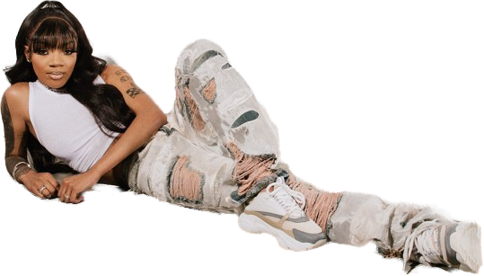

"F.N.F. (Let's Go)" ft. Hitkidd — The song that started everything. The Grammy-nominated crunk anthem
that took over TikTok in 2022.
Search: GloRilla Hitkidd FNF Let's Go Official Video
"Tomorrow 2" ft. Cardi B — Her first top-ten Billboard Hot 100 hit. Double platinum and iconic.
Search: GloRilla Tomorrow 2 Cardi B Official Video
"Blessed" — Gold-certified and one of her most personal early records.
Search: GloRilla Blessed Official Video
"Yeah Glo!" — A high-octane anthem that kicked off her massive 2024 run.
Search: GloRilla Yeah Glo Official Video
"Wanna Be" ft. Megan Thee Stallion — Two of rap's biggest female voices on one track. Top 40 hit.
Search: GloRilla Wanna Be Megan Thee Stallion Official Video
"TGIF" — The lead single ahead of her debut album Glorious. Another top-40 hit.
Search: GloRilla TGIF Official Video
"Hollon" — A standout cut from Glorious.
Search: GloRilla Hollon Official Video
"Whatchu Kno About Me" — Another fan favorite from the debut album.
Search: GloRilla Whatchu Kno About Me Official Video
"Sticky" ft. Tyler, the Creator — Her appearance on Tyler's Chromakopia album.
Search: Tyler the Creator Sticky GloRilla Official Video